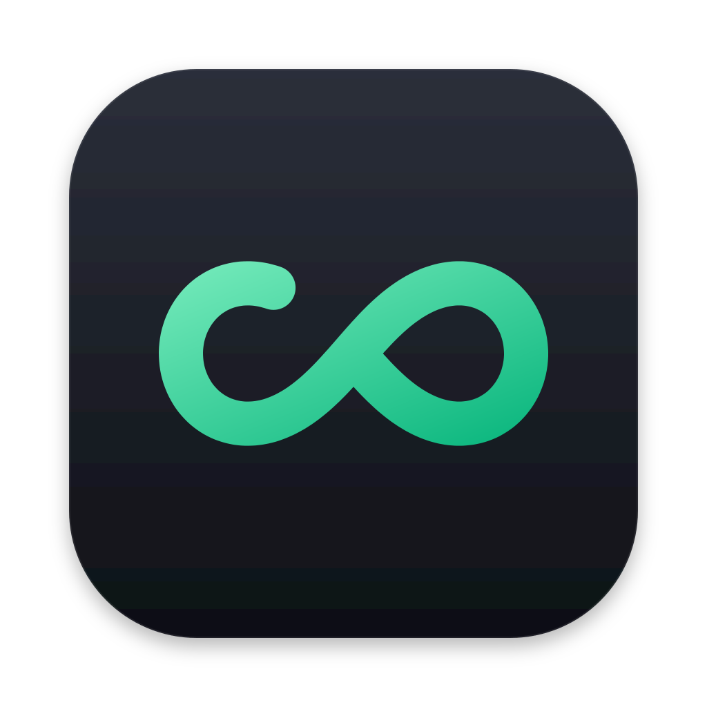

<!doctype html>
<html lang="en">
<head>
<meta charset="utf-8">
<title>limitless-codex guide</title>
<link rel="stylesheet" href="shared.css">
<style>
  /* The native panel is transparent and sized to the card plus its arrow. */
  body { display: flex; align-items: center; padding: 16px 16px 16px 26px; }
  .card {
    position: relative; width: 300px; padding: 16px 16px 14px; border-radius: 16px;
    background: var(--surface); -webkit-backdrop-filter: blur(30px) saturate(180%); backdrop-filter: blur(30px) saturate(180%);
    border: 1px solid var(--hairline); box-shadow: var(--shadow-lg);
    animation: arrive 420ms cubic-bezier(.2,.9,.25,1);
  }
  /* The arrow points at System Settings, which sits to the card's left. It lies fully
     outside the card: overlapping would double the translucent material. */
  .arrow {
    position: absolute; left: -10px; top: var(--arrow-y, 50%); width: 10px; height: 20px; margin-top: -10px;
    -webkit-backdrop-filter: blur(30px) saturate(180%); backdrop-filter: blur(30px) saturate(180%);
    clip-path: polygon(100% 0, 0 50%, 100% 100%); overflow: visible;
  }
  .arrow path { fill: var(--surface); stroke: var(--hairline); stroke-width: 1; }
  /* No room to the right of System Settings: the card sits on its left, arrow pointing right. */
  body.flip { padding: 16px 26px 16px 16px; }
  body.flip .arrow { left: auto; right: -10px; transform: scaleX(-1); }
  @keyframes arrive { from { opacity: 0; transform: translateX(14px) scale(.97); filter: blur(4px); } }
  header { display: flex; align-items: center; gap: 10px; margin-bottom: 12px; }
  header img { width: 28px; height: 28px; }
  header .t { flex: 1; }
  header small { display: block; color: var(--text-3); font-size: 11px; font-weight: 500; }
  .close { appearance: none; border: 0; width: 20px; height: 20px; border-radius: 50%; background: rgba(127,127,127,.18); color: var(--text-2); font: 600 12px/20px system-ui; }
  .close:active { transform: scale(.92); }

  ol { list-style: none; padding: 0; display: grid; gap: 10px; counter-reset: s; }
  li { display: grid; grid-template-columns: 22px 1fr; gap: 10px; align-items: start; font-size: 13px; line-height: 1.4; }
  li::before {
    counter-increment: s; content: counter(s); width: 22px; height: 22px; border-radius: 50%;
    display: grid; place-items: center; font: 700 11.5px system-ui; color: #fff; background: var(--accent-strong);
  }
  li.done::before { content: "✓"; }
  li.dim { opacity: .5; }
  li b { font-weight: 600; }

  /* A replica of the exact row to look for, with its switch animating on. */
  .replica {
    margin-top: 8px; display: flex; align-items: center; justify-content: space-between; gap: 10px;
    padding: 9px 11px; border-radius: 9px; background: var(--surface-solid); border: 1px solid var(--hairline);
    box-shadow: 0 0 0 3px var(--accent-soft); font-size: 12.5px; font-weight: 500;
  }
  .replica .left { display: flex; align-items: center; gap: 8px; }
  .replica img { width: 18px; height: 18px; }
  .switch { position: relative; width: 32px; height: 19px; border-radius: 10px; background: rgba(127,127,127,.3); flex: none; }
  .switch::after { content: ""; position: absolute; top: 2px; left: 2px; width: 15px; height: 15px; border-radius: 50%; background: #fff; box-shadow: 0 1px 2px rgba(0,0,0,.3); }
  .switch.anim { animation: sw-track 3.2s infinite; }
  .switch.anim::after { animation: sw-knob 3.2s infinite; }
  @keyframes sw-track { 0%, 35% { background: rgba(127,127,127,.3); } 45%, 90% { background: var(--accent-strong); } 100% { background: rgba(127,127,127,.3); } }
  @keyframes sw-knob { 0%, 35% { transform: none; } 45%, 90% { transform: translateX(13px); } 100% { transform: none; } }

  footer { margin-top: 14px; display: flex; align-items: center; justify-content: space-between; gap: 10px; }
  footer .status { font-size: 12px; }
  .success { display: grid; justify-items: center; gap: 8px; padding: 10px 0 4px; text-align: center; }
  .success svg { width: 44px; height: 44px; animation: pop 420ms cubic-bezier(.2,.9,.25,1.2); }
  @keyframes pop { from { transform: scale(.5); opacity: 0; } }

  /* Browser-only: a mock System Settings window so the guide can be reviewed in place. */
  body.prototype { padding: 0; display: block; background: linear-gradient(135deg, #2D3A5A, #5B4B8A 55%, #1E6F6A); }
  body.prototype .stage { position: absolute; inset: 0; display: flex; align-items: center; justify-content: center; gap: 0; }
  .mock { width: 640px; height: 460px; border-radius: 12px; background: #ECECEC; box-shadow: 0 30px 80px rgba(0,0,0,.45); display: grid; grid-template-columns: 200px 1fr; overflow: hidden; color: #1d1d1f; }
  @media (prefers-color-scheme: dark) { .mock { background: #232326; color: #eee; } }
  .mock aside { background: rgba(0,0,0,.05); padding: 40px 10px 10px; display: grid; align-content: start; gap: 2px; font-size: 12.5px; }
  .mock aside span { padding: 5px 8px; border-radius: 6px; }
  .mock aside span.sel { background: #0A84FF; color: #fff; }
  .mock section { padding: 40px 22px; }
  .mock h3 { font-size: 15px; margin-bottom: 14px; display: flex; align-items: center; gap: 8px; }
  .mock h3 img { width: 26px; height: 26px; }
  .mock .grp { border-radius: 9px; background: rgba(255,255,255,.7); border: 1px solid rgba(0,0,0,.06); }
  @media (prefers-color-scheme: dark) { .mock .grp { background: rgba(255,255,255,.06); } }
  .mock .r { display: flex; justify-content: space-between; align-items: center; padding: 10px 12px; font-size: 12.5px; border-top: 1px solid rgba(127,127,127,.15); }
  .mock .r:first-child { border-top: 0; }
  .mock .dots { position: absolute; margin: 14px; display: flex; gap: 8px; }
  .mock .dots i { width: 12px; height: 12px; border-radius: 50%; background: #FF5F57; } .mock .dots i:nth-child(2) { background: #FEBC2E; } .mock .dots i:nth-child(3) { background: #28C840; }
  .picker { position: absolute; top: 14px; left: 50%; transform: translateX(-50%); display: flex; gap: 6px; }
  .picker button { appearance: none; border: 0; padding: 5px 10px; border-radius: 7px; background: rgba(255,255,255,.2); color: #fff; font: 500 12px system-ui; }
  .picker button.on { background: #fff; color: #111; }
</style>
</head>
<body>
<div class="stage" id="stage"><div class="card" id="card"></div></div>

<script>
const native = window.webkit?.messageHandlers?.lc;
const send = (action, arg) => native?.postMessage({ action, arg });

// One guide per setting we send people to. The deep link already opens the right pane,
// so each guide names only what to look for and what to change.
const GUIDES = {
  notifications: {
    pane: 'Notifications',
    steps: [
      'System Settings opened to <b>limitless-codex</b> under Notifications.',
      'Turn on <b>Allow notifications</b>.',
    ],
    replica: 'Allow notifications',
    waiting: 'Waiting for the switch…',
    success: 'Notifications are on',
  },
  loginItems: {
    pane: 'Login Items & Extensions',
    steps: [
      'Scroll to <b>Allow in the Background</b>.',
      'Turn on <b>limitless-codex</b>.',
    ],
    replica: 'limitless-codex',
    replicaIcon: true,
    waiting: 'Waiting for the switch…',
    success: 'Monitoring can run',
  },
  focus: {
    pane: 'Focus',
    steps: [
      'Click the Focus that is on, such as <b>Do Not Disturb</b>.',
      'Under <b>Allowed Notifications</b>, click <b>Apps</b>, then <b>Add</b>.',
      'Choose <b>limitless-codex</b>.',
    ],
    waiting: 'Send a test again when you’re done.',
    manual: true,
  },
};

let kind = new URLSearchParams(location.search).get('kind') || 'notifications';
let solved = false;
const card = document.getElementById('card');

function render() {
  const g = GUIDES[kind];
  if (solved) {
    card.innerHTML = `<div class="success">
      <svg viewBox="0 0 44 44"><circle cx="22" cy="22" r="22" fill="#10B981"/><path d="M13 22.5 L19.5 29 L31 16" fill="none" stroke="#fff" stroke-width="3.6" stroke-linecap="round" stroke-linejoin="round"/></svg>
      <h2>${g.success}</h2><p>Taking you back to setup…</p></div>`;
    return;
  }
  const replica = g.replica ? `<div class="replica"><span class="left">${g.replicaIcon ? '' : ''}${g.replica}</span><span class="switch anim"></span></div>` : '';
  card.innerHTML = `
    <svg class="arrow" viewBox="0 0 10 20" aria-hidden="true"><path d="M10.5 0 L0.5 10 L10.5 20"/></svg>
    <header><div class="t"><h2>Change one setting</h2><small>${g.pane}</small></div>
      <button class="close" title="Close guide" data-act="closeGuide">✕</button></header>
    <ol>${g.steps.map((s, i) => `<li><div>${s}${i === g.steps.length - 1 ? replica : ''}</div></li>`).join('')}</ol>
    <footer>
      <span class="status">${g.manual ? '' : spinner()} ${g.waiting}</span>
      ${g.manual ? '<button class="btn primary" data-act="closeGuide">Done</button>' : ''}
    </footer>`;
}
const spinner = () => '<svg class="spinner" viewBox="0 0 16 16">' + [...Array(8)].map((_, i) =>
  `<rect x="7.2" y="1" width="1.6" height="4" rx=".8" fill="currentColor" opacity="${(i + 1) / 8}" transform="rotate(${i * 45} 8 8)"/>`).join('') + '</svg>';

// Native calls these: which guide to show, and when the setting has been changed.
window.lc = {
  show(k) { kind = k; solved = false; render(); },
  solved() { solved = true; render(); },
  // Arrow height is measured from the panel top; the arrow itself is positioned inside the card.
  place(flip, y) {
    document.body.classList.toggle('flip', flip);
    const top = Math.max(22, Math.min(card.offsetHeight - 22, y - card.offsetTop));
    card.style.setProperty('--arrow-y', top + 'px');
  },
};
document.addEventListener('click', (e) => { const a = e.target.closest('[data-act]')?.dataset.act; if (a) send(a); });

if (!native) {
  document.body.classList.add('prototype');
  const stage = document.getElementById('stage');
  const mock = document.createElement('div');
  const panes = {
    notifications: `<h3>limitless-codex</h3><div class="grp"><div class="r">Allow notifications <span class="switch"></span></div><div class="r">Desktop <span class="switch"></span></div><div class="r">Play sound for notifications <span class="switch"></span></div></div>`,
    loginItems: `<h3>Login Items &amp; Extensions</h3><div class="grp"><div class="r"><b>Allow in the Background</b></div><div class="r"><span>limitless-codex</span><span class="switch"></span></div><div class="r">Other app<span class="switch"></span></div></div>`,
    focus: `<h3>Focus</h3><div class="grp"><div class="r">🌙 Do Not Disturb <span>On</span></div><div class="r">🛏 Sleep <span></span></div><div class="r">💼 Work <span></span></div></div>`,
  };
  const side = { notifications: 'Notifications', loginItems: 'General', focus: 'Focus' };
  const draw = () => {
    mock.className = 'mock';
    mock.innerHTML = `<div class="dots"><i></i><i></i><i></i></div><aside>${['Wi-Fi','Bluetooth','General','Notifications','Sound','Focus','Screen Time'].map((s) => `<span class="${s === side[kind] ? 'sel' : ''}">${s}</span>`).join('')}</aside><section>${panes[kind]}</section>`;
  };
  draw();
  stage.prepend(mock);
  const picker = document.createElement('div'); picker.className = 'picker';
  picker.innerHTML = Object.keys(GUIDES).map((k) => `<button data-k="${k}">${GUIDES[k].pane}</button>`).join('') + '<button data-k="solve">Simulate: switch turned on</button>';
  picker.onclick = (e) => {
    const k = e.target.dataset.k; if (!k) return;
    if (k === 'solve') return lc.solved();
    lc.show(k); draw();
    picker.querySelectorAll('button').forEach((b) => b.classList.toggle('on', b.dataset.k === kind));
  };
  document.body.append(picker);
  picker.querySelector(`[data-k="${kind}"]`).classList.add('on');
}
render();
</script>
</body>
</html>
